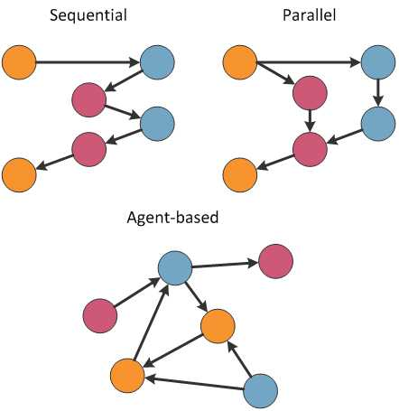

Agent-malli ja Actor-malli
Puhuttaessa Actor-mallista termi "Actor" viittaa "toimijaan" tai "tekijään", ei "näyttelijään". Puhuttaessa Agent-mallista termi "Agent" viittaa myös "toimijaan" tai "edustajaan", mutta ei "salaiseen agenttiin". Actor-malli ei ole vaihtoehto domain-mallille: Actor-malli ei ole varsinainen tietomalli, vaan lähinnä ohjelman tilan toteutustekniikka.
Jos haluat testailla nopeuksia, saat päälle ajanoton F#-interactiveen kirjoittamalla:
1:
|
#time "on";; |
Rinnakkaissuorituksesta
Rinnakkaista suorittamista on kolmea tyyppiä:
- Parallel Execution
- Ajetaan samaa koodipolkua yhtaikaa monessa säikeessä.
- Sopii rinnakkaisiin joukko-operaatioihin itsenäisille alkioille
- Sopii tarvittaessa CPU-resursseja paljon ja kun niitä on myös käytettävissä.
- .NET-ympäristössä: Task Parallel Library (TPL), .AsParallel()
- Concurrency.
- Ajetaan eri koodipolkuja yhtaikaa.
- Sopii silloin kun odotettavat resurssit ovat jotain muuta kuin CPU: Esim I/O tai se, että "odotetaan muita, odotetaan synkronointia".
- Perustuu siihen, että luovutetaan oma säie pois, kun sitä ei tarvita: Kaikkien muidenkin on tehtävä niin!
- .NET-ympäristössä: Async-await
- Hyödynnetään yleisesti viestipohjaisissa ("Message Passing") arkkitehtuureissa
- Lukitaan säikeet ja tila
- Ei ajeta rinnakkain
- Ei synkronointikysymyksiä
- .NET: lock
- Skaalautuvuus- ja suorituskykyongelmat
Asiaa havainnollistamaan, tässä kolme pientä ohjelmaa, jotka lähinnä kelaavat listan läpi ja nukkuvat joka alkiolla hetken:
1: 2: 3: 4: 5: 6: 7: 8: 9: 10: 11: 12: 13: 14: 15: 16: 17: 18: 19: 20: 21: 22: 23: 24: 25: 26: 27: 28: 29: 30: 31: 32: 33: 34: 35: 36: 37: 38: 39: 40: 41: 42: 43: 44: 45: 46: 47: 48: 49: |
#if INTERACTIVE #time "on" #endif open System open System.Threading open System.Threading.Tasks let Execution() = let iteri() = [|1..1000|] |> Array.map( fun i -> Thread.Sleep 200 //Lock the thread match i % 250 with | 0 -> Console.WriteLine("Item: " + i.ToString()) | _ -> () ) Console.WriteLine("Starting...") let complete = iteri() Console.WriteLine("Done") let ParallelExecution() = //TPL let iteri() = [|1..1000|] |> Array.Parallel.map( fun i -> Thread.Sleep 200 match i % 250 with | 0 -> Console.WriteLine("Item: " + i.ToString()) | _ -> () ) Console.WriteLine("Starting...") let complete = iteri() Console.WriteLine("Done") let AsyncParallelExecution() = //Async-await let iteri() = [|1..1000|] |> Array.map( fun i -> async { do! Async.Sleep 200 return match i % 250 with | 0 -> Console.WriteLine("Item: " + i.ToString()) | _ -> () } ) Console.WriteLine("Starting...") let complete = iteri() |> Async.Parallel |> Async.RunSynchronously Console.WriteLine("Done") |
Ensimmäinen on hidas. Seuraava on huomattavasti nopeampi. Mutta sille käy niin, että koneesta loppuvat threadit kesken. Kolmas on selvästi nopein, koska se vapauttaa säikeet suorittaessaan (ei-cpu-riippuvaista) async-operaatiota.
Tässä vastaavat suoritusajat (Interactivessa, i7-kannettavalla):
1: 2: 3: 4: 5: 6: 7: 8: 9: 10: 11: 12: 13: 14: 15: 16: 17: 18: 19: 20: 21: 22: 23: 24: 25: 26: 27: 28: 29: 30: |
> Execution();; Starting... Item: 250 Item: 500 Item: 750 Item: 1000 Done Real: 00:03:20.582, CPU: 00:00:00.000, GC gen0: 0, gen1: 0, gen2: 0 val it : unit = () > > ParallelExecution();; Starting... Item: 250 Item: 500 Item: 1000 Item: 750 Done Real: 00:00:22.266, CPU: 00:00:00.000, GC gen0: 0, gen1: 0, gen2: 0 val it : unit = () > AsyncParallelExecution();; Starting... Item: 1000 Item: 750 Item: 500 Item: 250 Done Real: 00:00:00.204, CPU: 00:00:00.000, GC gen0: 0, gen1: 0, gen2: 0 val it : unit = () |
Viestijonot
Erilaisia MQ-jono-tuotteita on useita. Mitäpä jos yksinkertainen viestijonotoiminnallisuus olisi integroitu suoraa ohjelmointikieleen?
Testaa oheinen koodi interactiven avulla:
1: 2: 3: 4: 5: 6: 7: 8: 9: 10: 11: 12: 13: 14: 15: 16: 17: 18: 19: 20: |
let myQueue = new MailboxProcessor<string>(fun myHandler -> let rec readNextMessage() = async { let! result = myHandler.Receive() System.Console.WriteLine("Handled: " + result) do! readNextMessage() } readNextMessage()) myQueue.Post("Hello 1 !") myQueue.Post("Hello 2 !") myQueue.CurrentQueueLength // 2 myQueue.Start() myQueue.CurrentQueueLength // 0 myQueue.Post("Hello 3 !") |
Actor-malli
Mitä jos "oliot" tilan kapseloijina korvattaisiin viestipohjaisella ratkaisulla?
Actor-malli on teoria, joka käyttää “Actor”eita rinnakkaislaskennan alkioina. Actor voi prosessoida tietoa, varastoida tietoa tai kommunikoida muiden actoreiden kanssa. Actor voi jopa ottaa vastaan viestissä itsellensä uuden toiminnallisuuden.
Actor-malli on lähtöisin Erlang-kielestä, mutta nykyään vaihtoehtoja alkaa löytyä jo monille eri kielille.
Tausta-ajatusta voisi verrata versiohallintaan: ohjelmaa ei ikinä voi ”pysäyttää ja katsoa missä tilassa se on”, vaan tila on kokoajan muuttuva käsite ja eri katsojalle näyttää erilaiselta.
Agent-malli
Agent-malli on käytännössä sama asia kuin Actor-malli, ehkä sillä pienellä erolla, että agent ottaa vastaan pyyntöjä, joten rajapinta on kiinteämpi. F#:ssa Agent-malli on kielessä suoraa tuettuna ja kapseloituna luokkaan nimeltä MailboxProcessor. Usein käytännössä tämä konkretisoituu siten, että isäntä vaan kyselee asioita, ja taustasäie sykkii parsien tapahtumahistoriaa joukko-operaatioilla.
Edellinen esimerkki lähetti viestikanavana merkkijonoja. Kätevämpää on kuitenkin lähettää discriminated union komentoja ja niiden parametreja.
Staattinen MailboxProcessor.Start on sama kuin kutsuisi ensin new MailboxProcessor() ja sitten sille .Start(). Agentille on helppo rakentaa myös timeoutit, virheenkäsittely ja peruutus-operaatiot.
Testaa oheista koodia:
1: 2: 3: 4: 5: 6: 7: 8: 9: 10: 11: 12: 13: 14: 15: 16: 17: 18: 19: 20: 21: 22: 23: 24: |
type ``Person agent methods`` = | AddPerson of string * int //Name*Age | GetPeople of AsyncReplyChannel<(string*int) list> let myQueue2 = MailboxProcessor<``Person agent methods``>.Start(fun myHandler -> let rec readNextMessage people = async { let! result = myHandler.Receive() match result with | AddPerson(n,s) -> return! readNextMessage ((n,s)::people) | GetPeople(response) -> let p = people response.Reply(p) return! readNextMessage people } readNextMessage []) let addPerson = AddPerson >> myQueue2.Post ("Matti", 30) |> addPerson ("Maija", 7) |> addPerson let res = myQueue2.PostAndReply(GetPeople) |
PostAndReply ohella on myös AsyncPostAndReply
Tarvitaan lisää...
Tämä oli vasta yksi agent, joka ei itsessään vielä oikein eroa .NET ConcurrentDictionary
Olion periyttämisen (tai enum-tyyppiproperyjen) sijaan käytetäänkin sitä, että agentit keskustelevat keskenään.

(kuvan lähde: Writing Concurrent Applications Using F# Agents)
Harjoitustehtävä
Harjoitus 1
Lisää "Person agent methods"-metodiin uusi metodi, joka palauttaa vain yli 18 vuotiaat ihmiset.
Harjoitus 2
Muuta "Person agent methods" agentti olemaan "prosessoimattomat ihmiset" ja tee rinnalle toinen agentti, "prosessoidut ihmiset":
- Tee pieni business-logiikka ja kommunikaatio, miten agentti prosessoimaton ihminen siirtyy prosessoiduksi.
- Vaihda rajapinta asynkroniseksi (AsyncPostAndReply)
- Voit myös kapseloida agentin tyypin sisälle.
Full name: AgentModelFin.Execution
member Clone : unit -> obj
member CopyTo : array:Array * index:int -> unit + 1 overload
member GetEnumerator : unit -> IEnumerator
member GetLength : dimension:int -> int
member GetLongLength : dimension:int -> int64
member GetLowerBound : dimension:int -> int
member GetUpperBound : dimension:int -> int
member GetValue : params indices:int[] -> obj + 7 overloads
member Initialize : unit -> unit
member IsFixedSize : bool
...
Full name: System.Array
Full name: Microsoft.FSharp.Collections.Array.map
type Thread =
inherit CriticalFinalizerObject
new : start:ThreadStart -> Thread + 3 overloads
member Abort : unit -> unit + 1 overload
member ApartmentState : ApartmentState with get, set
member CurrentCulture : CultureInfo with get, set
member CurrentUICulture : CultureInfo with get, set
member DisableComObjectEagerCleanup : unit -> unit
member ExecutionContext : ExecutionContext
member GetApartmentState : unit -> ApartmentState
member GetCompressedStack : unit -> CompressedStack
member GetHashCode : unit -> int
...
Full name: System.Threading.Thread
--------------------
Thread(start: ThreadStart) : unit
Thread(start: ParameterizedThreadStart) : unit
Thread(start: ThreadStart, maxStackSize: int) : unit
Thread(start: ParameterizedThreadStart, maxStackSize: int) : unit
Thread.Sleep(millisecondsTimeout: int) : unit
static member BackgroundColor : ConsoleColor with get, set
static member Beep : unit -> unit + 1 overload
static member BufferHeight : int with get, set
static member BufferWidth : int with get, set
static member CapsLock : bool
static member Clear : unit -> unit
static member CursorLeft : int with get, set
static member CursorSize : int with get, set
static member CursorTop : int with get, set
static member CursorVisible : bool with get, set
...
Full name: System.Console
(+0 other overloads)
Console.WriteLine(value: string) : unit
(+0 other overloads)
Console.WriteLine(value: obj) : unit
(+0 other overloads)
Console.WriteLine(value: uint64) : unit
(+0 other overloads)
Console.WriteLine(value: int64) : unit
(+0 other overloads)
Console.WriteLine(value: uint32) : unit
(+0 other overloads)
Console.WriteLine(value: int) : unit
(+0 other overloads)
Console.WriteLine(value: float32) : unit
(+0 other overloads)
Console.WriteLine(value: float) : unit
(+0 other overloads)
Console.WriteLine(value: decimal) : unit
(+0 other overloads)
Int32.ToString(provider: IFormatProvider) : string
Int32.ToString(format: string) : string
Int32.ToString(format: string, provider: IFormatProvider) : string
Full name: AgentModelFin.ParallelExecution
from Microsoft.FSharp.Collections.ArrayModule
Full name: Microsoft.FSharp.Collections.ArrayModule.Parallel.map
Full name: AgentModelFin.AsyncParallelExecution
Full name: Microsoft.FSharp.Core.ExtraTopLevelOperators.async
type Async
static member AsBeginEnd : computation:('Arg -> Async<'T>) -> ('Arg * AsyncCallback * obj -> IAsyncResult) * (IAsyncResult -> 'T) * (IAsyncResult -> unit)
static member AwaitEvent : event:IEvent<'Del,'T> * ?cancelAction:(unit -> unit) -> Async<'T> (requires delegate and 'Del :> Delegate)
static member AwaitIAsyncResult : iar:IAsyncResult * ?millisecondsTimeout:int -> Async<bool>
static member AwaitTask : task:Task<'T> -> Async<'T>
static member AwaitWaitHandle : waitHandle:WaitHandle * ?millisecondsTimeout:int -> Async<bool>
static member CancelDefaultToken : unit -> unit
static member Catch : computation:Async<'T> -> Async<Choice<'T,exn>>
static member FromBeginEnd : beginAction:(AsyncCallback * obj -> IAsyncResult) * endAction:(IAsyncResult -> 'T) * ?cancelAction:(unit -> unit) -> Async<'T>
static member FromBeginEnd : arg:'Arg1 * beginAction:('Arg1 * AsyncCallback * obj -> IAsyncResult) * endAction:(IAsyncResult -> 'T) * ?cancelAction:(unit -> unit) -> Async<'T>
static member FromBeginEnd : arg1:'Arg1 * arg2:'Arg2 * beginAction:('Arg1 * 'Arg2 * AsyncCallback * obj -> IAsyncResult) * endAction:(IAsyncResult -> 'T) * ?cancelAction:(unit -> unit) -> Async<'T>
static member FromBeginEnd : arg1:'Arg1 * arg2:'Arg2 * arg3:'Arg3 * beginAction:('Arg1 * 'Arg2 * 'Arg3 * AsyncCallback * obj -> IAsyncResult) * endAction:(IAsyncResult -> 'T) * ?cancelAction:(unit -> unit) -> Async<'T>
static member FromContinuations : callback:(('T -> unit) * (exn -> unit) * (OperationCanceledException -> unit) -> unit) -> Async<'T>
static member Ignore : computation:Async<'T> -> Async<unit>
static member OnCancel : interruption:(unit -> unit) -> Async<IDisposable>
static member Parallel : computations:seq<Async<'T>> -> Async<'T []>
static member RunSynchronously : computation:Async<'T> * ?timeout:int * ?cancellationToken:CancellationToken -> 'T
static member Sleep : millisecondsDueTime:int -> Async<unit>
static member Start : computation:Async<unit> * ?cancellationToken:CancellationToken -> unit
static member StartAsTask : computation:Async<'T> * ?taskCreationOptions:TaskCreationOptions * ?cancellationToken:CancellationToken -> Task<'T>
static member StartChild : computation:Async<'T> * ?millisecondsTimeout:int -> Async<Async<'T>>
static member StartChildAsTask : computation:Async<'T> * ?taskCreationOptions:TaskCreationOptions -> Async<Task<'T>>
static member StartImmediate : computation:Async<unit> * ?cancellationToken:CancellationToken -> unit
static member StartWithContinuations : computation:Async<'T> * continuation:('T -> unit) * exceptionContinuation:(exn -> unit) * cancellationContinuation:(OperationCanceledException -> unit) * ?cancellationToken:CancellationToken -> unit
static member SwitchToContext : syncContext:SynchronizationContext -> Async<unit>
static member SwitchToNewThread : unit -> Async<unit>
static member SwitchToThreadPool : unit -> Async<unit>
static member TryCancelled : computation:Async<'T> * compensation:(OperationCanceledException -> unit) -> Async<'T>
static member CancellationToken : Async<CancellationToken>
static member DefaultCancellationToken : CancellationToken
Full name: Microsoft.FSharp.Control.Async
--------------------
type Async<'T>
Full name: Microsoft.FSharp.Control.Async<_>
static member AddMemoryPressure : bytesAllocated:int64 -> unit
static member CancelFullGCNotification : unit -> unit
static member Collect : unit -> unit + 2 overloads
static member CollectionCount : generation:int -> int
static member GetGeneration : obj:obj -> int + 1 overload
static member GetTotalMemory : forceFullCollection:bool -> int64
static member KeepAlive : obj:obj -> unit
static member MaxGeneration : int
static member ReRegisterForFinalize : obj:obj -> unit
static member RegisterForFullGCNotification : maxGenerationThreshold:int * largeObjectHeapThreshold:int -> unit
...
Full name: System.GC
Full name: Microsoft.FSharp.Core.unit
type MailboxProcessor<'Msg> =
interface IDisposable
new : body:(MailboxProcessor<'Msg> -> Async<unit>) * ?cancellationToken:CancellationToken -> MailboxProcessor<'Msg>
member Post : message:'Msg -> unit
member PostAndAsyncReply : buildMessage:(AsyncReplyChannel<'Reply> -> 'Msg) * ?timeout:int -> Async<'Reply>
member PostAndReply : buildMessage:(AsyncReplyChannel<'Reply> -> 'Msg) * ?timeout:int -> 'Reply
member PostAndTryAsyncReply : buildMessage:(AsyncReplyChannel<'Reply> -> 'Msg) * ?timeout:int -> Async<'Reply option>
member Receive : ?timeout:int -> Async<'Msg>
member Scan : scanner:('Msg -> Async<'T> option) * ?timeout:int -> Async<'T>
member Start : unit -> unit
member TryPostAndReply : buildMessage:(AsyncReplyChannel<'Reply> -> 'Msg) * ?timeout:int -> 'Reply option
...
Full name: Microsoft.FSharp.Control.MailboxProcessor<_>
--------------------
new : body:(MailboxProcessor<'Msg> -> Async<unit>) * ?cancellationToken:CancellationToken -> MailboxProcessor<'Msg>
val string : value:'T -> string
Full name: Microsoft.FSharp.Core.Operators.string
--------------------
type string = String
Full name: Microsoft.FSharp.Core.string
val int : value:'T -> int (requires member op_Explicit)
Full name: Microsoft.FSharp.Core.Operators.int
--------------------
type int = int32
Full name: Microsoft.FSharp.Core.int
--------------------
type int<'Measure> = int
Full name: Microsoft.FSharp.Core.int<_>
member Reply : value:'Reply -> unit
Full name: Microsoft.FSharp.Control.AsyncReplyChannel<_>
Full name: Microsoft.FSharp.Collections.list<_>